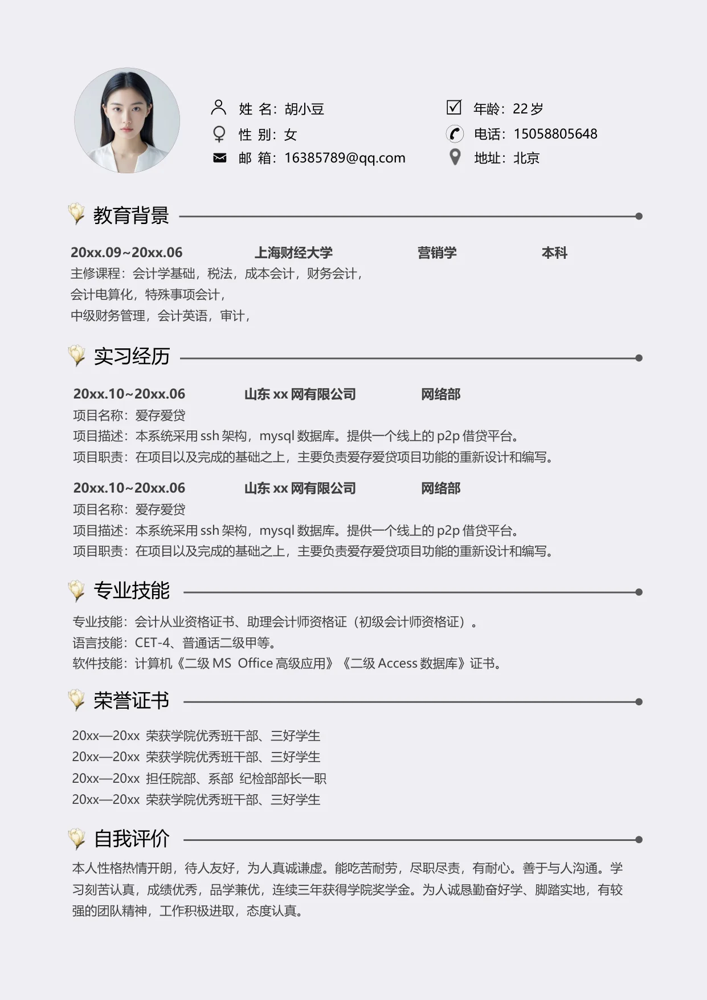

20xx—20xx 荣获学院优秀班干部、三好学生
20xx—20xx 荣获学院优秀班干部、三好学生
20xx—20xx 担任院部、系部 纪检部部长一职
20xx—20xx 荣获学院优秀班干部、三好学生
20xx.09~20xx.06 上海财经大学 营销学 本科
主修课程：会计学基础，税法，成本会计，财务会计，
会计电算化，特殊事项会计，
中级财务管理，会计英语，审计，
20xx.10~20xx.06 山东xx 网有限公司 网络部
项目名称：爱存爱贷
项目描述：本系统采用ssh 架构，mysql 数据库。提供一个线上的p2p 借贷平台。
项目职责：在项目以及完成的基础之上，主要负责爱存爱贷项目功能的重新设计和编写。
本人性格热情开朗，待人友好，为人真诚谦虚。能吃苦耐劳，尽职尽责，有耐心。善于与人沟通。学
习刻苦认真，成绩优秀，品学兼优，连续三年获得学院奖学金。为人诚恳勤奋好学、脚踏实地，有较
强的团队精神，工作积极进取，态度认真。
专业技能：会计从业资格证书、助理会计师资格证（初级会计师资格证）。
语言技能：CET-4、普通话二级甲等。
软件技能：计算机《二级MS Office 高级应用》《二级Access 数据库》证书。
教育背景
实习经历
姓 名：胡小豆
性 别：女
专业技能
邮 箱：16385789@qq.com
年龄：22 岁
电话：15058805648
地址：北京
20xx.10~20xx.06 山东xx 网有限公司 网络部
项目名称：爱存爱贷
项目描述：本系统采用ssh 架构，mysql 数据库。提供一个线上的p2p 借贷平台。
项目职责：在项目以及完成的基础之上，主要负责爱存爱贷项目功能的重新设计和编写。
自我评价
荣誉证书